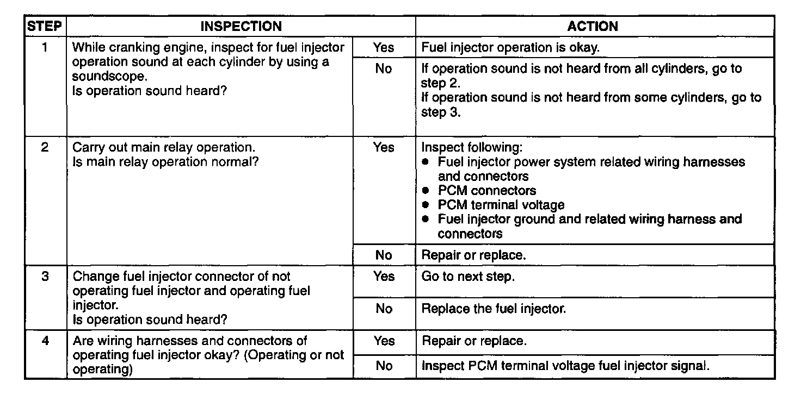

Fuel Injector on-Vehicle Inspection
On-vehicle InspectionFuel Injector Operation Inspection:

1. Warm up the engine and let it idle.
2. Listen for operational sound of each fuel injector with a screwdriver or a soundscope.
NOTE:
- The best way to judge the performance of a fuel injector is to compare its sound with the sound of other fuel injectors.
3. If no sound is heard, carry out the "Fuel Injector Resistance Inspection".